【2024郑州工博会】线下精准邀约+线上海量覆盖 展会流量“爆表”！
首页 / 【2024郑州工博会】线下精准邀约+线上海量覆盖 展会流量“爆表”！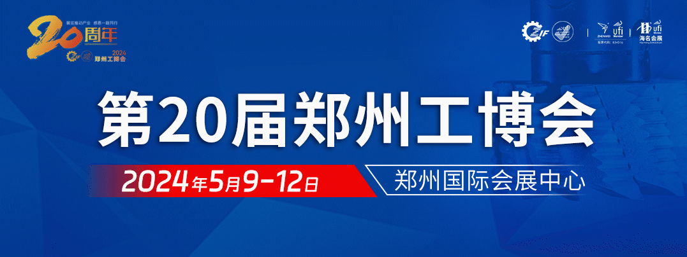
2024第20届郑州工业装备博览会
2024第20届郑州工业装备博览会（以下简称“郑州工博会”),将于2024年5月9-12日在郑州国际会展中心举办，展会设立机床展、激光钣金展、工业自动化展、机器人展、工业互联网展、五金机电展等主题展，展会规模近70000平方米，2500家业内知名企业参展，集中展示先进制造装备、整体解决方案、柔性制造单元、智能制造系统、数字化工厂等产业链创新技术，预计将吸引70000专业买家参观。
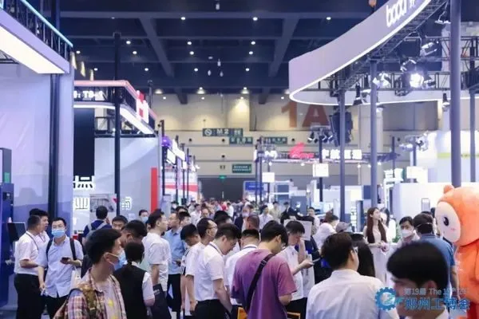
近日展会宣传工作全面启动，并建立起“线下精准邀约+线上海量覆盖”的立体化推广传播体系，为展会高曝光持续造势，引发行业共振！
线下精准邀约
目前郑州工博会观众组织团队先后深入郑州游乐设备展览会、郑州电动车、三轮车及新能源汽车展、中原医疗器械展、中原广告展、商用密码大会、全国汽配会、河南洽谈会、郑州磨料磨具磨削展、中德汽车大会、新乡电工产品博览会、郑州铝工业展览会、钢材大会、新乡产业园区、洛阳产业园区、许昌产业园区等各大用户行业展会及产业园区并进行一对一买家邀约，与专业买家进行线下面对面交流，真实了解企业实际生产情况，精准对接观众需求。
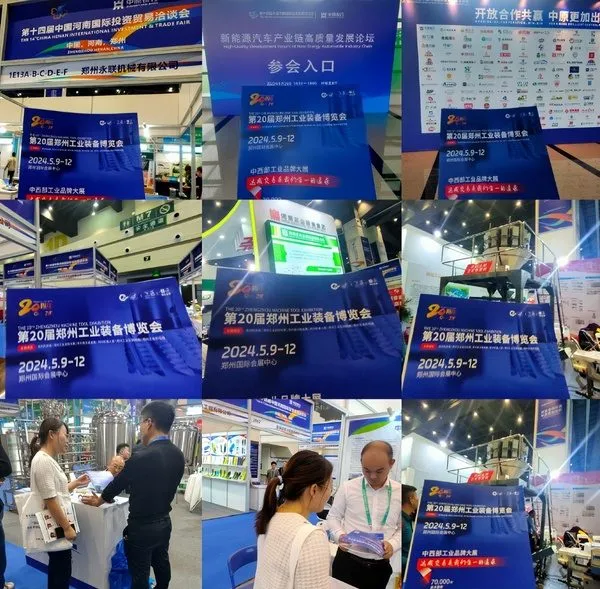
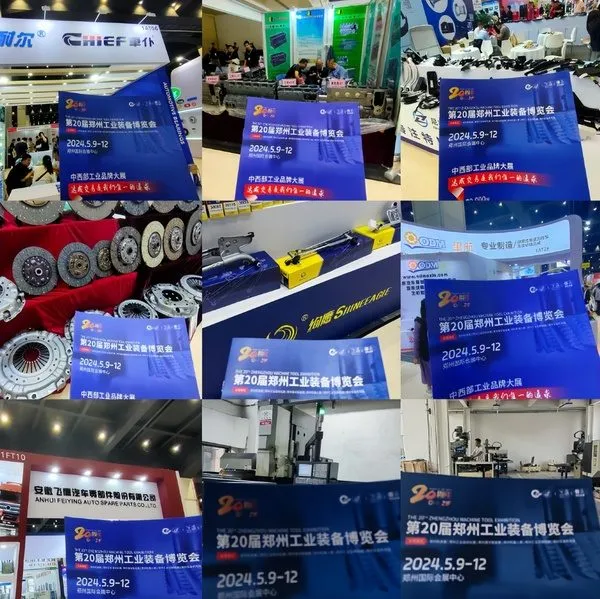
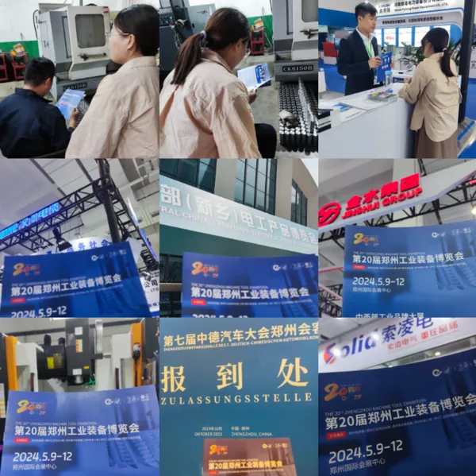
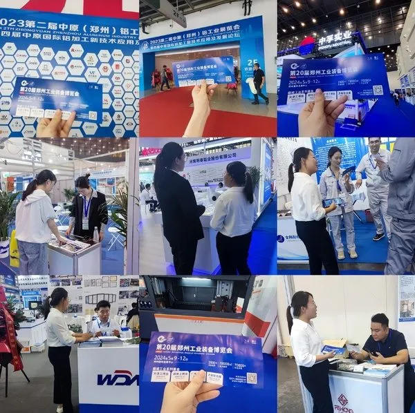
线上海量覆盖
同时在抖音、朋友圈、百度等平台投放广告，精准匹配用户画像，投入大量经费进行展会信息植入，并利用搜狐号，头条号、一点号、网易号等平台建立自媒体矩阵，吸引大批高质量高精准观众，拓宽优质观众，整合100+媒体以及行业知名媒体资源，扩大展会影响力。
抖音、朋友圈广告
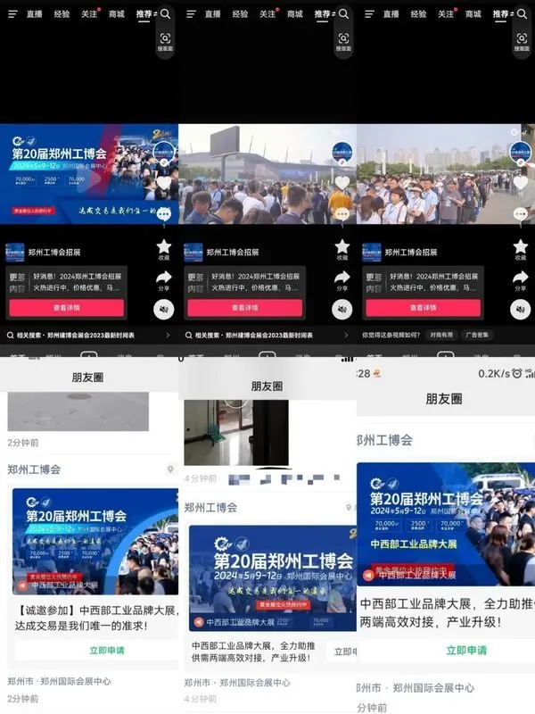
媒体网站广告
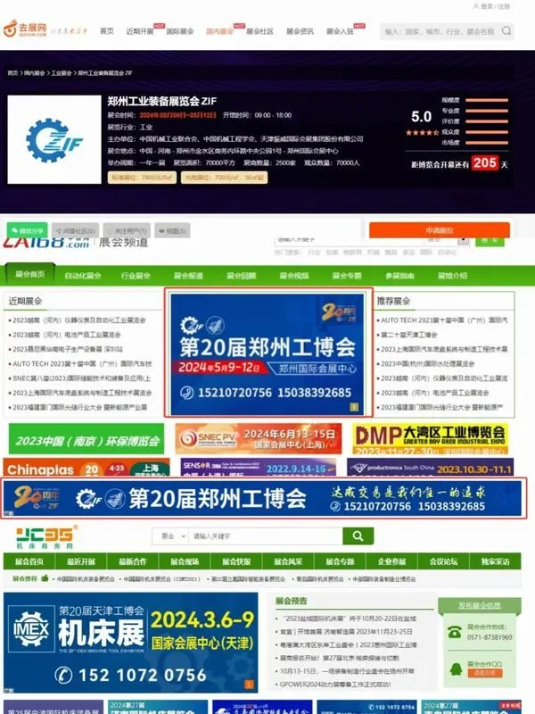
百度首位广告
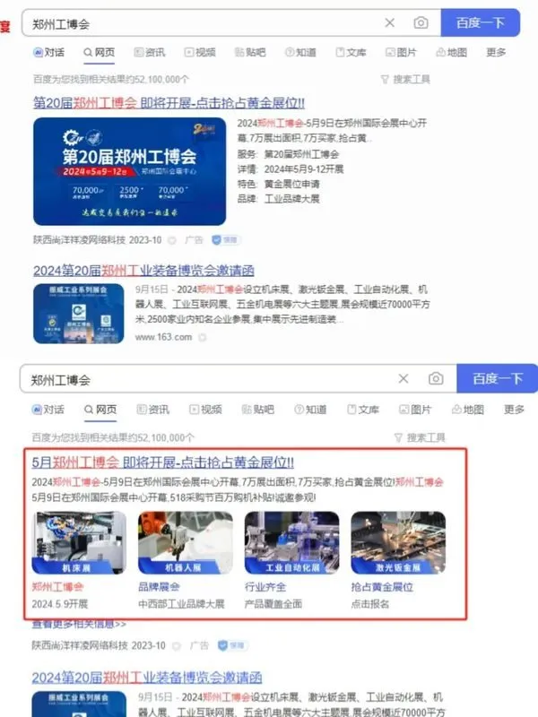
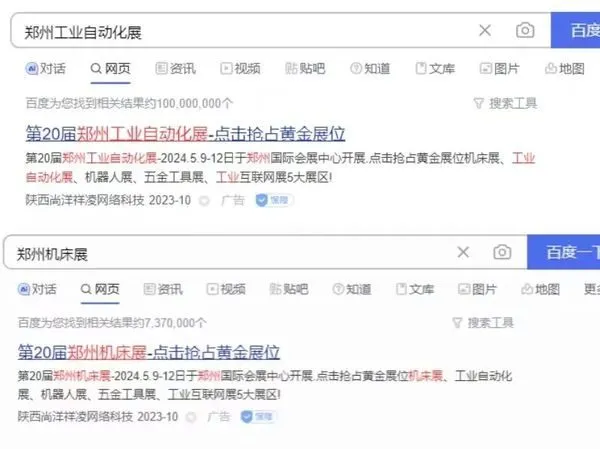
在接下来的时间里，郑州工博会邀约团队将继续扩大宣传力度，全力整合行业资源，持续发力线上线下多渠道推广，精准、快速、有效传播展会信息，进一步夯实买家宣传工作，以保证展商参展效益最大化，全力以赴打造一场高品质盛会！
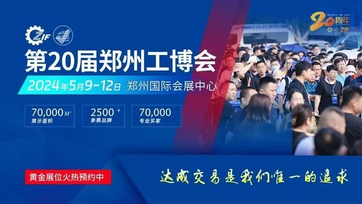